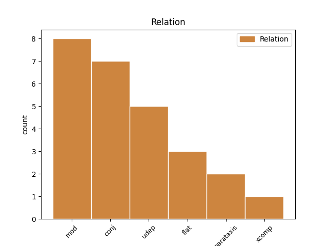
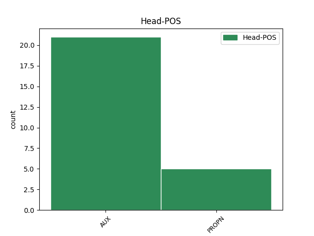
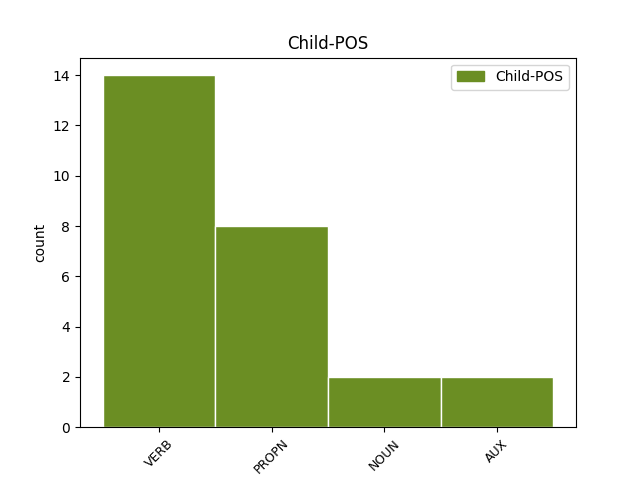

Distribution of features within this leaf



Agreement Rules sorted by frequency.
- When the dependent token is the modifer(mod) of the head token, and the head token is AUX and the dependent token is VERB.
1 Цианай _ _ _ _ 0 _ _ _
2 бактеринуудынь _ _ _ _ 0 _ _ _
3 хүрээлэн _ _ _ _ 0 _ _ _
4 Наранай _ _ _ _ 0 _ _ _
5 эршэм _ _ _ _ 0 _ _ _
6 хүсэн хү VERB _ Aspect=Perf|Evident=Nfh|Mood=Ind|Number=Sing|Person=3|Polarity=Pos|Tense=Past 17 mod _ _
7 , _ _ _ _ 0 _ _ _
8 нүүрһэнхүшэлэй _ _ _ _ 0 _ _ _
9 хии _ _ _ _ 0 _ _ _
10 болон _ _ _ _ 0 _ _ _
11 уһые _ _ _ _ 0 _ _ _
12 ашаглажа _ _ _ _ 0 _ _ _
13 өөрһэдөө _ _ _ _ 0 _ _ _
14 тэжээллэг _ _ _ _ 0 _ _ _
15 бодосые _ _ _ _ 0 _ _ _
16 үйлэдбэрилхэ _ _ _ _ 0 _ _ _
17 болоо бол AUX _ Gender=Neut|Mood=Ind|Number=Sing|Person=3|Polarity=Pos|Tense=Fut|VerbForm=Fin|Voice=Act 0 _ _ _
18 . _ _ _ _ 0 _ _ _
1 Эртын _ _ _ _ 0 _ _ _
2 Египетдэ Египет PROPN _ Case=Loc|Number=Sing|Person=3 12 udep _ _
3 МЭҮ _ _ _ _ 0 _ _ _
4 2000 _ _ _ _ 0 _ _ _
5 оной _ _ _ _ 0 _ _ _
6 үедэ _ _ _ _ 0 _ _ _
7 али _ _ _ _ 0 _ _ _
8 хэдын _ _ _ _ 0 _ _ _
9 эһэһэн _ _ _ _ 0 _ _ _
10 талха _ _ _ _ 0 _ _ _
11 мэдэдэг _ _ _ _ 0 _ _ _
12 байба бай AUX _ Mood=Cnd|Number=Sing|Person=3|VerbForm=Conv 0 _ _ _
13 . _ _ _ _ 0 _ _ _
1 Японой _ _ _ _ 0 _ _ _
2 Буддын _ _ _ _ 0 _ _ _
3 шажанай _ _ _ _ 0 _ _ _
4 Сока Сока PROPN _ Case=Nom|Number=Sing|Person=3 0 _ _ _
5 Гаккай Гаккай PROPN _ Case=Nom|Number=Sing|Person=3 4 flat _ _
6 байгуулга _ _ _ _ 0 _ _ _
7 Сингапурта _ _ _ _ 0 _ _ _
8 олон _ _ _ _ 0 _ _ _
9 хүн _ _ _ _ 0 _ _ _
10 һургадаг _ _ _ _ 0 _ _ _
11 болоод _ _ _ _ 0 _ _ _
12 тэдэнь _ _ _ _ 0 _ _ _
13 ехэнхидээ _ _ _ _ 0 _ _ _
14 Хитад _ _ _ _ 0 _ _ _
15 яһатанууд _ _ _ _ 0 _ _ _
16 байдаг _ _ _ _ 0 _ _ _
17 . _ _ _ _ 0 _ _ _
1 Юань _ _ _ _ 0 _ _ _
2 улас _ _ _ _ 0 _ _ _
3 мүхэхын _ _ _ _ 0 _ _ _
4 алдада _ _ _ _ 0 _ _ _
5 Күрёгой _ _ _ _ 0 _ _ _
6 гадаада _ _ _ _ 0 _ _ _
7 бодолго _ _ _ _ 0 _ _ _
8 зүршэлдэжэ _ _ _ _ 0 _ _ _
9 , _ _ _ _ 0 _ _ _
10 эсэстээ _ _ _ _ 0 _ _ _
11 1392 _ _ _ _ 0 _ _ _
12 ондо _ _ _ _ 0 _ _ _
13 И _ _ _ _ 0 _ _ _
14 Сон _ _ _ _ 0 _ _ _
15 Ге _ _ _ _ 0 _ _ _
16 ( _ _ _ _ 0 _ _ _
17 Чосон _ _ _ _ 0 _ _ _
18 уласые _ _ _ _ 0 _ _ _
19 үндэһэлэгшэ _ _ _ _ 0 _ _ _
20 Тайжү _ _ _ _ 0 _ _ _
21 ван _ _ _ _ 0 _ _ _
22 ) _ _ _ _ 0 _ _ _
23 жанжин _ _ _ _ 0 _ _ _
24 ( _ _ _ _ 0 _ _ _
25 генерал _ _ _ _ 0 _ _ _
26 ) _ _ _ _ 0 _ _ _
27 түрэ _ _ _ _ 0 _ _ _
28 эрьюулэн _ _ _ _ 0 _ _ _
29 уласай _ _ _ _ 0 _ _ _
30 ван _ _ _ _ 0 _ _ _
31 боложо боло AUX _ Mood=Ind|Number=Sing|Person=3|Tense=Past|VerbForm=Fin 0 _ _ _
32 , _ _ _ _ 0 _ _ _
33 дараагай _ _ _ _ 0 _ _ _
34 зургаан _ _ _ _ 0 _ _ _
35 зуунай _ _ _ _ 0 _ _ _
36 түүхэеэ _ _ _ _ 0 _ _ _
37 мүнхэрһэн _ _ _ _ 0 _ _ _
38 Чосон _ _ _ _ 0 _ _ _
39 уласые _ _ _ _ 0 _ _ _
40 үндэһэлбэ үндэһэл VERB _ Mood=Ind|Number=Sing|Person=3|Tense=Aor|VerbForm=Fin 31 conj _ _
41 . _ _ _ _ 0 _ _ _
1 Улас _ _ _ _ 0 _ _ _
2 орониие _ _ _ _ 0 _ _ _
3 1996 _ _ _ _ 0 _ _ _
4 болон _ _ _ _ 0 _ _ _
5 1998—2004 _ _ _ _ 0 _ _ _
6 онуудта он NOUN _ Case=Loc|Gender=Neut|Number=Plur|Person=3 10 udep _ _
7 тус _ _ _ _ 0 _ _ _
8 тус _ _ _ _ 0 _ _ _
9 ударидажа _ _ _ _ 0 _ _ _
10 байһан байһ AUX _ Mood=Ind|Number=Sing|Person=3|Tense=Past|VerbForm=Fin 0 _ _ _
11 . _ _ _ _ 0 _ _ _
1 Улаан _ _ _ _ 0 _ _ _
2 - _ _ _ _ 0 _ _ _
3 Үдэдэ _ _ _ _ 0 _ _ _
4 , _ _ _ _ 0 _ _ _
5 Эрхүүдэ _ _ _ _ 0 _ _ _
6 , _ _ _ _ 0 _ _ _
7 Новосибирскда Новосибирск PROPN _ Case=Loc|Number=Sing|Person=3 0 _ _ _
8 , _ _ _ _ 0 _ _ _
9 Москвада Москва PROPN _ Case=Loc|Number=Sing|Person=3 7 conj _ _
10 гараһан _ _ _ _ 0 _ _ _
11 олон _ _ _ _ 0 _ _ _
12 тоото _ _ _ _ 0 _ _ _
13 рассказууд _ _ _ _ 0 _ _ _
14 , _ _ _ _ 0 _ _ _
15 туужанууд _ _ _ _ 0 _ _ _
16 , _ _ _ _ 0 _ _ _
17 романуудай _ _ _ _ 0 _ _ _
18 автор _ _ _ _ 0 _ _ _
19 юм _ _ _ _ 0 _ _ _
20 . _ _ _ _ 0 _ _ _
1 Тэрэниие _ _ _ _ 0 _ _ _
2 коммунизмын _ _ _ _ 0 _ _ _
3 Эсэгэ _ _ _ _ 0 _ _ _
4 хэмээн _ _ _ _ 0 _ _ _
5 нэрыдэхэнь _ _ _ _ 0 _ _ _
6 элбэг _ _ _ _ 0 _ _ _
7 болоод бол AUX _ Mood=Cnd|Number=Sing|Person=3|VerbForm=Conv 0 _ _ _
8 , _ _ _ _ 0 _ _ _
9 тэрэбээр _ _ _ _ 0 _ _ _
10 хүмүүжүүлэгшэ _ _ _ _ 0 _ _ _
11 болон _ _ _ _ 0 _ _ _
12 улас _ _ _ _ 0 _ _ _
13 түрын _ _ _ _ 0 _ _ _
14 зүдхэлтэн _ _ _ _ 0 _ _ _
15 байба байб AUX _ Mood=Cnd|Number=Sing|Person=3|VerbForm=Conv 7 conj _ _
16 . _ _ _ _ 0 _ _ _
1 Эртын _ _ _ _ 0 _ _ _
2 Грециин _ _ _ _ 0 _ _ _
3 хамагай _ _ _ _ 0 _ _ _
4 алдартай _ _ _ _ 0 _ _ _
5 үень _ _ _ _ 0 _ _ _
6 МЭҮ _ _ _ _ 0 _ _ _
7 480 _ _ _ _ 0 _ _ _
8 - _ _ _ _ 0 _ _ _
9 323 _ _ _ _ 0 _ _ _
10 он _ _ _ _ 0 _ _ _
11 хүрэтэрхи _ _ _ _ 0 _ _ _
12 хугасаае _ _ _ _ 0 _ _ _
13 хамарха _ _ _ _ 0 _ _ _
14 Һунгадаг _ _ _ _ 0 _ _ _
15 эрин _ _ _ _ 0 _ _ _
16 болоод _ _ _ _ 0 _ _ _
17 Грекшүүд _ _ _ _ 0 _ _ _
18 хүгжэл _ _ _ _ 0 _ _ _
19 дэбжэлтынгөө _ _ _ _ 0 _ _ _
20 орьёлдо _ _ _ _ 0 _ _ _
21 хүрэжэ хүрэ VERB _ Mood=Ind|Number=Plur|Person=3|Tense=Past|VerbForm=Fin 28 parataxis _ _
22 , _ _ _ _ 0 _ _ _
23 гайхалтай _ _ _ _ 0 _ _ _
24 уралигай _ _ _ _ 0 _ _ _
25 бүтээлнүүдые _ _ _ _ 0 _ _ _
26 үйлэдэжэ _ _ _ _ 0 _ _ _
27 үлдэгдэһэн _ _ _ _ 0 _ _ _
28 бэлэй бэл AUX _ Mood=Ind|Number=Sing|Person=3|Tense=Past|VerbForm=Fin 0 _ _ _
29 . _ _ _ _ 0 _ _ _
1 Харин _ _ _ _ 0 _ _ _
2 тэдэгээрэй _ _ _ _ 0 _ _ _
3 үржэбэринь _ _ _ _ 0 _ _ _
4 уг _ _ _ _ 0 _ _ _
5 тэгшэ _ _ _ _ 0 _ _ _
6 үнсэгтэй _ _ _ _ 0 _ _ _
7 гурбалжанай _ _ _ _ 0 _ _ _
8 талмай талм VERB _ Aspect=Imp|Mood=Imp|Number=Sing|Person=2|VerbForm=Fin 9 xcomp _ _
9 болодог боло AUX _ Aspect=Perf|Mood=Imp|Number=Sing|Person=2|Tense=Past|VerbForm=Fin|Voice=Act 0 _ _ _
10 . _ _ _ _ 0 _ _ _
No disagree examples found.